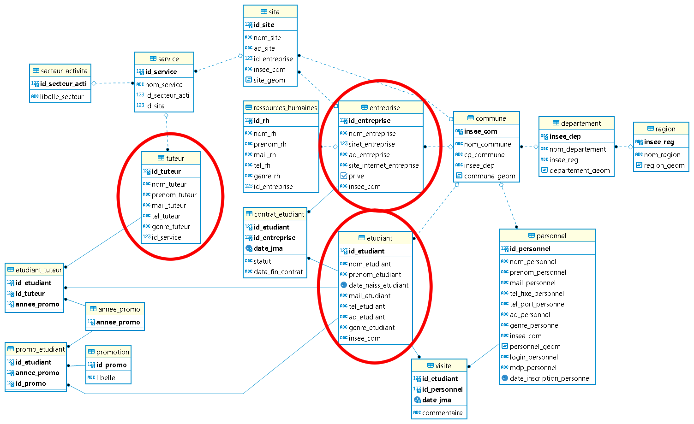

PROJET ISA
Itinéraire de Suivi des Apprentis
SIG-WEB
Année Scolaire : 2020-2021
-
GROUPE
- Alex
- Jeanne
- Jéros
Plan
- Outils
- Modèle Conceptuel des données (MCD)
- Espace Membre
- Carte
- Données
- Démonstration
- Améliorations potentielles
- Difficultés
- Conclusion
- Bibliographie
1. OUTILS

2. MCD
3. espace membre
Page de connexion / Page d'inscription
Côté client
- CSS : Validation des inputs
- Javascript : Vérification et Validation des données
Côté serveur : PHP
- Vérification des données
- Validation et Connexion à la base de données
- Requête dans la base de données
4. Carte
Fonctionnalités
- Choix de fond de carte
- Zoom et plein écran
- Géolocalisation
- Recentrer la carte
- Itinéraire
- NoScript
- Chargement des données(Ajax, Fetch)
- ...
4. Carte : Chargement des données en Json (GeoJson)
Ajax- Promesse - Async & Await
function chargerDatas(url) {
return new Promise(function (resolve, reject) {
$.ajax({
url: url,
type: 'GET',
dataType: 'json',
success: function (response) {
resolve(response)
},
error: function (error) {
reject(error)
},
})
})
}
async function getData(url) {
var response = await chargerDatas(url);
return response;
}
Fetch - Async & Await
async function chargerDonnees(url) {
var resp = await fetch(url);
var response = await resp.json();
return response;
}
5. Page de données
non Formulaire
Graphique
- Données du côté serveur au côté client par :
PHP et Ajax - Modélisation avec Anychart et
Mise à jour avec setInterval sur 30sec
Listing
PHP / JavascriptFormulaire : ajout, modif, import et export
Côté client
- CSS : Validation des inputs
Côté serveur : PHP
- Vérification
- Validation et Connexion à la base de données
- Requête dans la base de données
7. Améliorations Potentielles
- Mettre en place un fond de carte en localhost : Qgis + Postgres + Geoserver
- Ramener le menu de routing au niveau des markers
- Sécurisation des données
- API pour avoir d'autres types d'itinéraires (bâteau, train, avion etc...)
- Itinéraire hors France Métropolitaine
- Couplage avec une autre application type Waze ou Google pour avoir un état du trafic
- Faciliter la mise à jour de la base de données (classe qui disparaît, fusion de communes etc...)
- Optimisation du code (répétitions, rassembler plusieurs scripts, utilisation de la POO etc...)
- ...
8. Difficultés
- Crise du covid
- Changements d'emploi du temps
- En Css
- En Php
- Demande compliquée pour le niveau de la licence
9. Conclusion
- Maîtrise de HTML
- Maîtrise de CSS
- Mise en place d'une grille en Css
- Manipulation de la responsive design
- Maîtrise des Nouvelles Technologies de Javascript ES6
- Promesse
- Closure
- Fonctions fléchées et auto-invoquées
- Module, import et export
- ...
- Très bon niveau en PHP
- Maîtrise de SQL/PLPGSQL